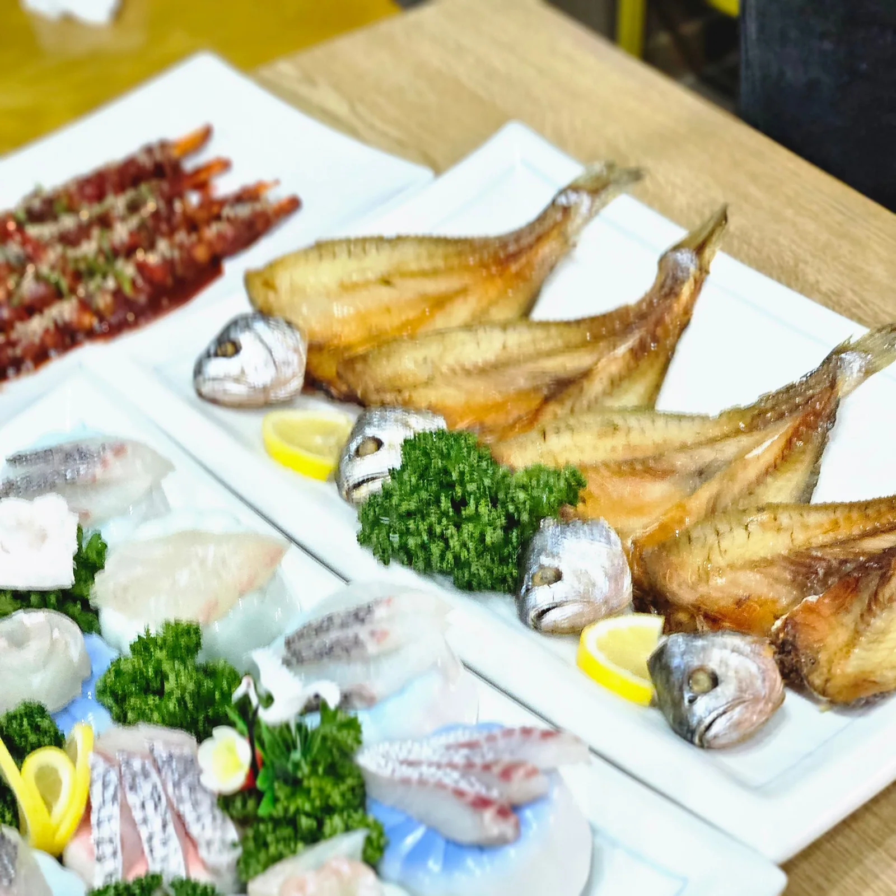
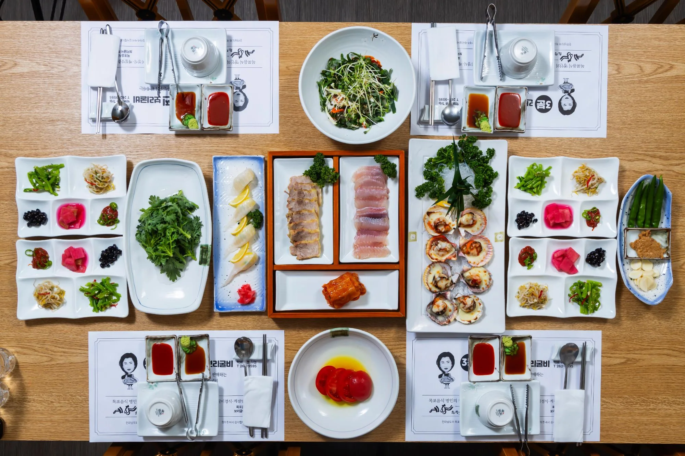

20,000원 정식점심 특선
목포식 굴비 정식 (부세)
1인20,000원
정갈한 기본 반찬과 해풍에 맛 들인 보리굴비 한 마리. 점심에 가볍고 든든하게 즐기는 목포식 보리굴비 정식입니다.
- 기본반찬
- 굴비 小
1인 1찬 기준 · 굴비는 부세를 사용합니다. ※ 점심 특선 메뉴입니다.

1인20,000원
정갈한 기본 반찬과 해풍에 맛 들인 보리굴비 한 마리. 점심에 가볍고 든든하게 즐기는 목포식 보리굴비 정식입니다.
1인 1찬 기준 · 굴비는 부세를 사용합니다. ※ 점심 특선 메뉴입니다.

1인30,000원
신선한 활어회와 울금 초밥, 다양한 스끼에 큼직한 보리굴비가 함께하는 정성 가득한 한 상.
1인 1찬 기준 · 굴비는 부세를 사용합니다.

1인30,000원
국내산 한돈으로 직접 빚은 수제 떡갈비와 보리굴비를 함께. 어르신과 아이가 함께하는 가족 식사에 특히 좋습니다.
1인 1찬 기준 · 굴비는 부세를 사용합니다.

1인40,000원
목포 낙지와 보리굴비의 만남. 양념이 듬뿍 밴 낙지호롱과 활어회, 초밥, 보리굴비가 함께 나오는 가장 많이 찾으시는 상차림입니다.
1인 1찬 기준 · 굴비는 부세를 사용합니다.

한상160,000원
활어회를 중심으로 홍어삼합, 가리비 치즈구이, 초밥과 제철 음식을 한 상 가득 차려 드리는 예향의 회 한정식입니다.
한상차림 기준 · 구성은 계절과 재료 수급에 따라 달라질 수 있습니다.

한상200,000원
예향 정식에 전복·해삼·멍게 등 특별한 제철 해산물이 더해진 업그레이드 한상. 귀한 손님을 모시는 자리에 어울립니다.
한상차림 기준 · 구성은 계절과 재료 수급에 따라 달라질 수 있습니다.
À LA CARTE
한 상에 더하는 목포의 별미
OUR TABLE, IN PICTURES
메뉴를 선택해 상차림을 살펴보세요.
HANJEONGSIK
1인 40,000원 · 판매 1위
낙지호롱과 활어회, 초밥, 스끼, 보리굴비가 한 상에 차려지는 예향의 판매 1위 상차림입니다.
HANJEONGSIK
1인 20,000원 · 점심 특선
기본 반찬과 보리굴비. 울금밥을 울금물에 살짝 말아 굴비 한 점을 올려 드셔보세요.
HANJEONGSIK
3~4인 한상 160,000원
활어회와 홍어삼합, 가리비구이, 초밥과 제철 찬을 한 상 가득 차려 드립니다.
TAKE-OUT & SEASON
행사·모임 도시락과 철따라 달라지는 한 상

1개20,000원
정성 가득한 한 상을 도시락에 담았습니다. 세 가지 메인 요리를 한 도시락에 담아 모임·행사 도시락으로 좋습니다.
수량과 받으실 날짜·시간은 전화로 주문해 주세요.
DRINKS
콜키지 가능 · 병당 20,000원 (최대 2병)